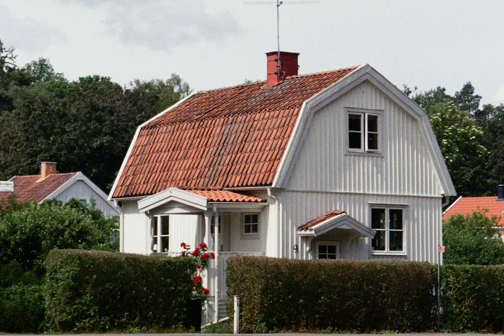

01
Dolda Fel i Hus
Dolda fel i hus kan upptäckas långt efter att köparen har fått tillträde till fastigheten. Det kan exempelvis röra sig om problem med fukt, mögel, konstruktion, dränering, tak, el, VVS eller våtrum. Att ett problem varit osynligt vid köpet innebär dock inte i sig att det juridiskt är ett dolt fel.
Vi hjälper till att utreda vad köparen kunde förvänta sig av huset och om felet borde ha upptäckts före köpet. Vid behov kombineras den juridiska bedömningen med teknisk bevisning för att klarlägga felets orsak, omfattning och när det uppkom.
